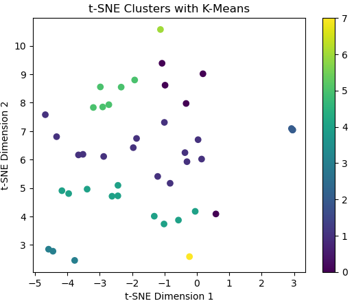
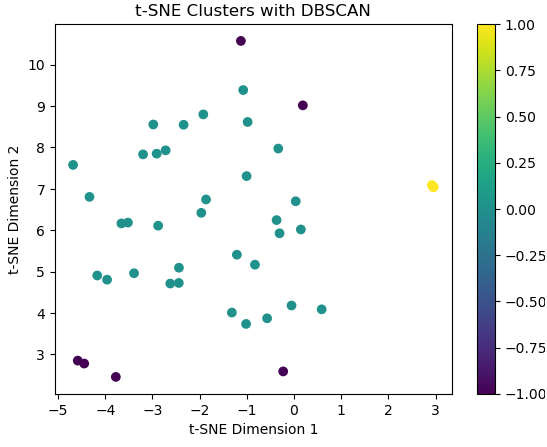
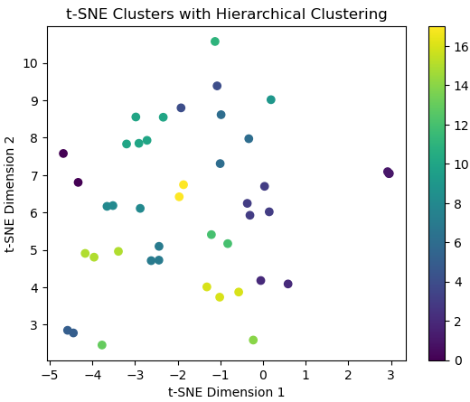
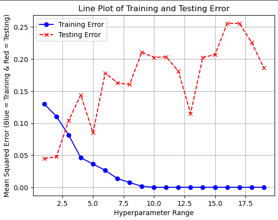
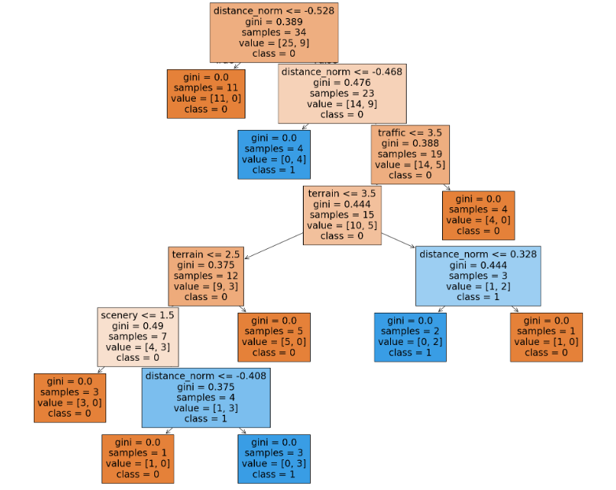
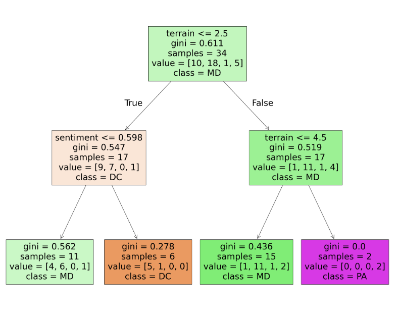

Analyzing Bike Routes in Washington, DC:
Clustering and Classification for Urban Insights
Introduction
Exploring a new city can be an overwhelming experience, especially when navigating its unique traditions, attractions, and outdoor activities. For avid biking enthusiasts, this challenge is heightened by the need to find suitable bike paths to explore. Questions like Which trails offer the best scenery around the city? and Which paths are most practical for commuting, shopping, or other daily activities? naturally arise when diving into the biking landscape of an unfamiliar area.
Even for those less passionate about cycling, services like Lime, Capital Bikeshare, and others have made eBikes widely accessible, offering a convenient and sustainable way to explore the city. Biking, whether as a recreational activity or a mode of transportation, is a vital aspect of urban culture. Beyond its practical benefits, cycling also contributes to reducing carbon emissions, playing a critical role in a city’s environmental sustainability efforts.
For residents and visitors of Washington, DC, biking is an integral part of city life. However, identifying bike trails that align with personal goals—whether for leisure, fitness, or utility—can be a daunting task. This study aims to address that challenge by clustering bike trails based on their inherent qualities and predicting characteristics for new or unexplored paths.
We focused on a variety of trail attributes to inform our analysis. These included ratings for terrain difficulty, traffic levels, and scenic beauty. Additionally, we considered sentiment analysis, trail distances, and structural aspects such as whether a trail forms a loop. By leveraging these characteristics, our goal is to group similar bike paths together, providing users with actionable insights into which trails best meet their needs.
Objective
The primary goal of this research is to analyze and categorize the bike trails in Washington, DC, to provide valuable insights that help cyclists make informed decisions about their routes. By examining key characteristics of the trails, such as distance, terrain difficulty, traffic conditions, and scenic value, we aim to create a comprehensive understanding of the biking infrastructure in the city. The study specifically focuses on the objectives of trail clustering and predicting route attributes.
By employing different clustering algorithms, we attempt to group bike trails with similar characteristics such as distance, terrain, traffic and more. This will allow cyclists to easily identify trails that best match their preferences, whether they seek leisurely recreation or a physically demanding workout. Beyond just cyclists, grouping data can be used by city planners in addressing gaps in trail diversity when expanding trails to new areas. For example, if there are few trails catering to beginners with flat terrain and low traffic, planners can prioritize adding such routes to balance the network and make cycling more accessible.
We transitioned from clustering techniques to a focus on supervised learning methods with the objective of accurately predicting key qualities of bike trails. Specifically, we utilized decision trees to achieve this goal. Predictive modeling in this context offers significant potential to enhance the overall biking experience and address various practical needs. For instance, an effective model can predict trail sentiment — a measure that provides insight into factors such as the level of tourism or crowding on a trail. Cyclists seeking quieter routes can use these predictions to identify less busy trails, thereby tailoring their experience to personal preferences. Additionally, supervised learning can provide insights into the structural characteristics of a trail, such as whether it forms a loop. This type of information not only improves a cyclist’s understanding of a trail but also contributes to safety by helping riders make more informed decisions about their routes. Overall, our objective is to leverage supervised learning techniques to deliver actionable insights that optimize the biking experience and enhance trail accessibility, safety, and enjoyment.
Key Findings
Clustering
- Clustering results were subtle, and clear, actionable groupings were not identified.
- K-Means showed the most promise, though the clusters lacked obvious interpretability.
- Results suggest that current features may not fully capture trail distinctions; additional data could improve insights.
- Incorporating user feedback or geospatial data might enhance the clustering process and provide more actionable results.
Predicting
- A simple linear model predicted sentiment with roughly 86% success. However, it was deemed a poor fit for the data, having an R^2 value of 0.03.
- Using a more advanced model, we successfully predicted the sentiment of previously unseen trails with over 95% accuracy (equivalent to a 4.7% error rate).
- Predicting whether a trail forms a loop proved more challenging, with the model achieving an accuracy of around 78%.
- Lastly, predicting the state in which a trail begins was particularly difficult, with the model reaching only 44% accuracy.
Methodology Overview
Data
To gain a comprehensive understanding of bike trails in Washington, DC, we gathered data from BikeWashington.org, a detailed resource for bike trails in the region. The site includes a table of routes with information on names, descriptions, distances, and ratings for terrain, traffic, and scenery. Using web scraping techniques with browser automation tools, we efficiently processed this information for analysis, resulting in a dataset of 43 unique routes with six key attributes.
The dataset underwent a cleaning process to address redundant columns, missing values, and inconsistent category formats. Additionally, binary features were created, and sentiment analysis of route descriptions was performed, expanding the dataset to 15 attributes.
Exploratory Data Analysis (EDA) was conducted as the final step in data preparation. Techniques such as descriptive statistics, density plots, frequency analysis, and count plots were employed to understand the data better. EDA provided valuable insights into the dataset’s structure and helped identify relationships and patterns critical for subsequent clustering and modeling tasks.
Unsupervised Learning
Clustering the bike trails involved multiple steps to uncover patterns and groupings within the dataset, leveraging unsupervised learning techniques. Initially, we applied dimensionality reduction methods, such as Principal Component Analysis (PCA) and t-Distributed Stochastic Neighbor Embedding (t-SNE), to simplify the dataset while preserving its essential structure. PCA helped identify the optimal number of dimensions by capturing variance, whereas t-SNE provided a more nuanced visualization of potential clusters by maintaining local similarities. Both techniques informed the subsequent clustering steps, allowing us to visualize the data in reduced dimensions and better understand its structure.
Three primary clustering algorithms were then employed to group similar bike trails: K-Means, DBSCAN, and Hierarchical Clustering. K-Means, a partitioning method, was optimized using the Elbow and Silhouette methods to determine the appropriate number of clusters. This approach provided well balanced groups that logically appeared the best. The clusters formed by K-Means generally aligned with routes that shared common features, such as similar distances or ratings. The plot below illustrates the eight clusters formed by K-Means, projected onto the 2-D t-SNE space for ease of visualization.

DBSCAN, a density-based clustering method, allowed us to detect clusters of trails based on proximity and density, making it particularly useful for identifying outliers or trails that do not fit well into other groupings. While this ability is beneficial for excluding irrelevant data, it resulted in an uneven distribution of clusters. This highlights the sparsity of our data set, as we have a 15 dimensional vector space and only 43 points to fill it. Below displays the DBSCAN clusters represented in a 2-D space. Note that purple points represent “noise” or unassigned data in the DBSCAN algorithm.

Finally, Hierarchical Clustering was implemented to create a framework of the groups clusters belonged to. Specifically, we used agglomerative clustering, or “bottom-up”, where each data point starts as its own cluster and is progressively merged with others to form larger clusters until all data points are grouped. This resulted in 18 different clusters as seen in the plot below.

Supervised Learning
Linear regression can be thought of as drawing a line of best fit through a set of data points to uncover the most accurate relationship between variables. It is one of the simplest and most interpretable models for making predictions. Using data from 43 bike trails in the DMV area, we explored the predictive power of a multiple linear regression model. Specifically, we aimed to predict the sentiment of a trail (the dependent variable) based on 10 independent variables: terrain rating, traffic rating, scenery rating, normalized distance in miles, unpaved, flat, workout, park, river, and loop. After training the model on 34 observations, we assessed its performance by evaluating both the error and the goodness-of-fit. While the model predicted trail sentiment reasonably well, it ultimately failed to capture the complexity of the data, making it a poor overall fit.
In contrast, regression trees rely on decision-based rules to create a branching structure of yes/no responses, leading to a specific outcome. We used a regression tree to predict sentiment using the same 10 independent variables. After training the tree on 34 observations and testing it on unseen data, we optimized its structure by experimenting with different parameters. The resulting tree outperformed the linear regression model, improving prediction accuracy by nearly 10%, demonstrating the superiority of regression trees in this context.

To predict whether a bike trail was a loop, we used a binary classification tree. Classification trees operate similarly to regression trees but predict discrete outcomes — in this case, whether a trail is a loop (1) or not (0). We optimized the tree’s parameters and trained it on 80% of the dataset. While the model achieved reasonable accuracy, there was significant room for improvement, indicating that additional data or alternative approaches might enhance performance.

Finally, we used a multiclass classification tree to predict the state where each bike trail begins. Unlike binary classification trees, multiclass trees predict one of several possible categories — in this case, four unique state labels in our dataset. Following the same procedure as before, we optimized the tree’s parameters and trained it on 80% of the data. However, this model performed poorly in predicting the correct state, only slightly surpassing random guessing. This outcome highlighted the complexity of the task and the limitations of the current dataset and approach.

Societal Implications
The results of the clustering methods revealed some groupings, but they were not particularly clear or immediately informative. Of the three methods used, K-Means produced the most interpretable results, with clusters aligning to some extent with trail features. However, the distinctions between clusters were subtle, and no definitive or obvious patterns emerged that could clearly segment trails into well-defined categories. While K-Means provided a structured grouping, these results should be approached cautiously, as the boundaries between clusters were not always intuitive or meaningful. This lack of clarity suggests that the features used in this analysis may not fully capture the nuances of trail characteristics or user preferences. Contrarily, the results suggest that clustering is possible, and with enhanced data, more concrete insights may be revealed.
So, although clustering results were not highly interpretable, they emphasize the need for comprehensive trail data to inform future planning efforts. These findings can inspire discussions on how urban infrastructure can better accommodate cyclists, promote sustainable commuting, and encourage healthier lifestyles. We were largely limited by available data on bike routes in DC. Additional features such as user demographics, trail usage patterns, economic data, and even community input would greatly improve the data and ensuing analysis. With richer data, future iterations of this project could generate deeper insights, making the findings more actionable and beneficial for urban development and the biking community.
Improved biking infrastructure not only benefits individual riders but also fosters broader societal gains, including reduced traffic congestion, lower carbon emissions, and enhanced public health. By addressing challenges such as unclear clustering patterns, city planners can refine their approach to ensure that bike trails are designed to meet the community’s diverse needs.
Call to Action
The findings of this project highlight an exciting opportunity for city planners, policymakers, and community stakeholders to take meaningful steps toward improving biking infrastructure in Washington, DC. As biking continues to grow in popularity as a sustainable and healthy mode of transportation, it is imperative to ensure that trails are accessible, safe, and enjoyable for all types of riders. While the current analysis provides some insights, the clustering results reveal that further refinements are necessary to better classify and understand trail characteristics.
Moving forward, city planners should consider investing in more comprehensive data collection efforts. Gathering detailed information on trail usage, user demographics, and rider feedback would enhance the ability to make meaningful clusters, which would in turn help tailor biking infrastructure to community needs. Collaborating with local organizations or even biking advocates could provide valuable perspectives and real-time feedback on trail usability.
Ultimately, this project underlines the importance of continual research and innovation in urban planning. Leveraging advanced analytical and statistical methods alongside community-focused approaches will help shape a biking infrastructure that better supports the city. By taking these actions, DC can set an example for other cities striving to become more bike-friendly and environmentally conscious.
Conclusion
This study highlights the growing importance of well-planned biking infrastructure in urban areas like Washington, DC. While the clustering results were not highly conclusive, they emphasize the potential for data-driven approaches to improve how bike trails are understood, categorized, and enhanced. Predictive modeling demonstrated the capability to estimate trail characteristics like sentiment and loop formation, though the models’ performance varied depending on the task.
The analysis reveals the need for richer and more diverse data to generate actionable insights. By prioritizing comprehensive data collection and leveraging community input, city planners can better meet the needs of diverse cyclists and create a more connected, bike-friendly urban environment.
These findings encourage stakeholders to act by refining data collection, collaborating with the community, and prioritizing improvements in underutilized areas. With these efforts, Washington, DC, can not only enhance its biking experience but also set a benchmark for urban cycling infrastructure nationwide.